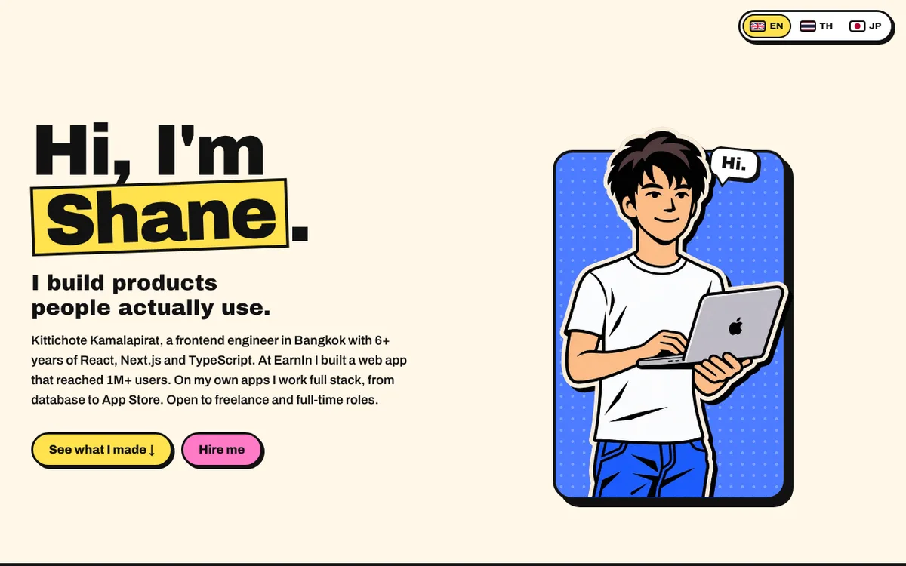
Why again?
I work for myself now, building my own apps. That could change: one day I might look for a job again, or take on freelance clients. When that day comes, my portfolio has to do its job on the first visit, so I wanted it up to date and professional, but also something people remember.
The old site was v3, which I built in Next.js over a month around New Year 2024. Its layout was heavily inspired by Brittany Chiang's portfolio. It still listed jobs I'd left as "Present", it didn't mention a single app I'd shipped since, and it looked like a lot of other developer portfolios.
Step 1: fix what's there
v4 started small. Before redesigning anything, I moved v3 from Vercel to GitHub Pages as a static export, with a GitHub Actions workflow that builds and deploys on every push to main. Along the way I found that the theme toggle only worked for visitors whose phone was already in dark mode. The colour tokens were only defined for that case. I fixed that, cleaned up an animation loop that never stopped, and added labels for screen readers.
Then I shipped one thing before any redesign: Toptal's "Top 3% talent" badge. While I was deciding on a design, the most useful thing for getting hired was a trust signal someone else gives me, so it went live first. That's also when I found the site was deploying from a different repo than the one I thought. That's worth checking before you change anything.
Step 2: go wide
My brief to the AI was one line: "Be super creative. Make me impressed." Instead of one redesign, I got working prototypes, built with my real jobs, projects and screenshots, and each one labelled with who it's best for. Over a few sessions there were seven:
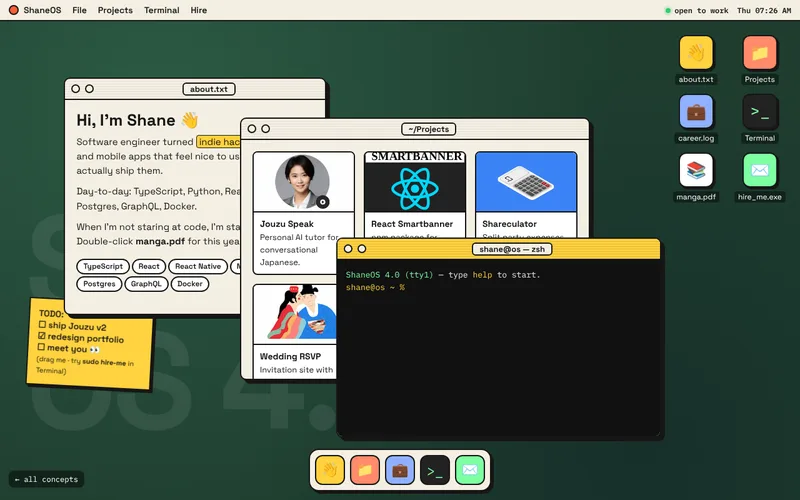
sudo hire-me.
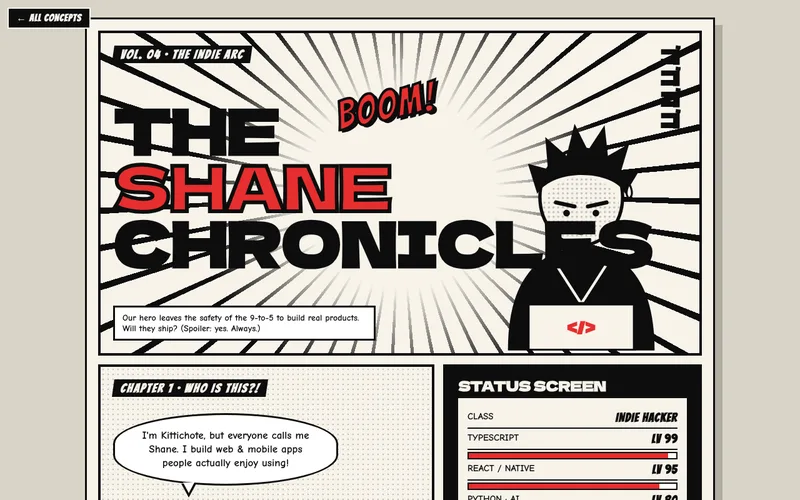
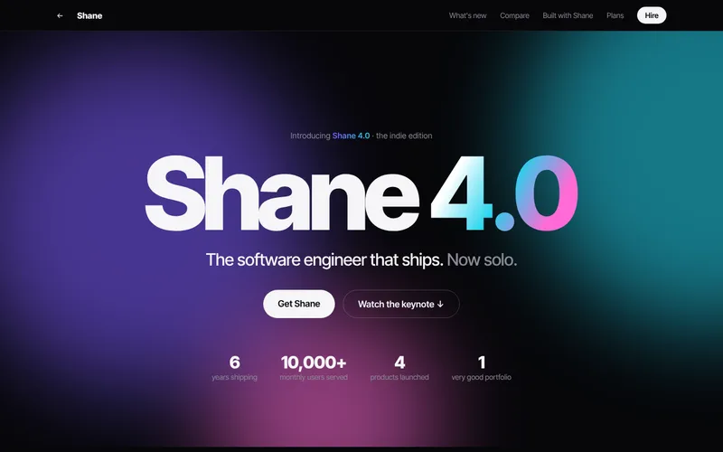
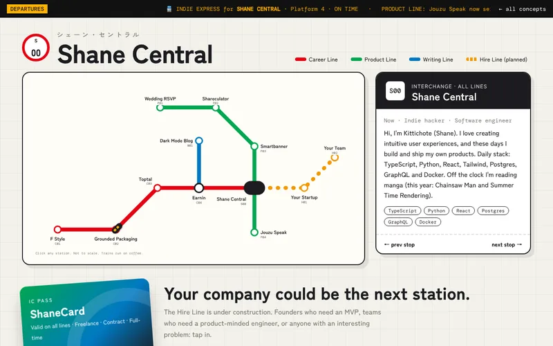
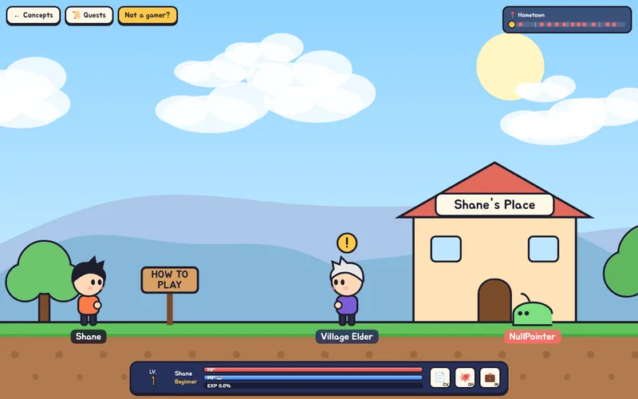
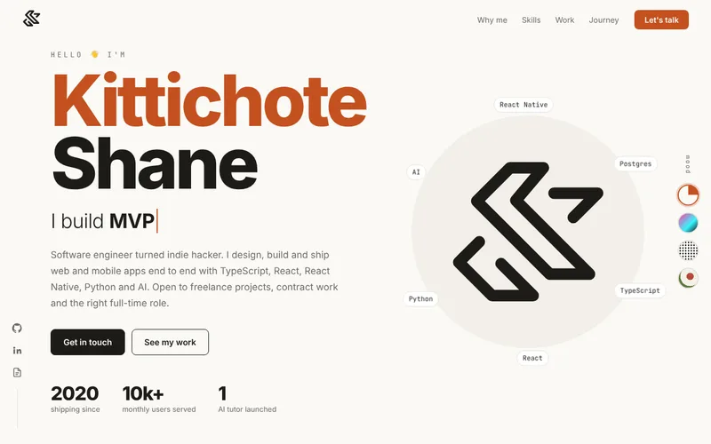
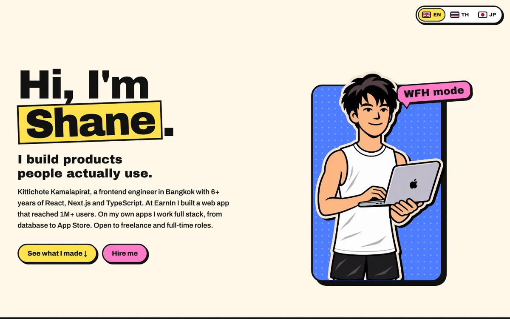
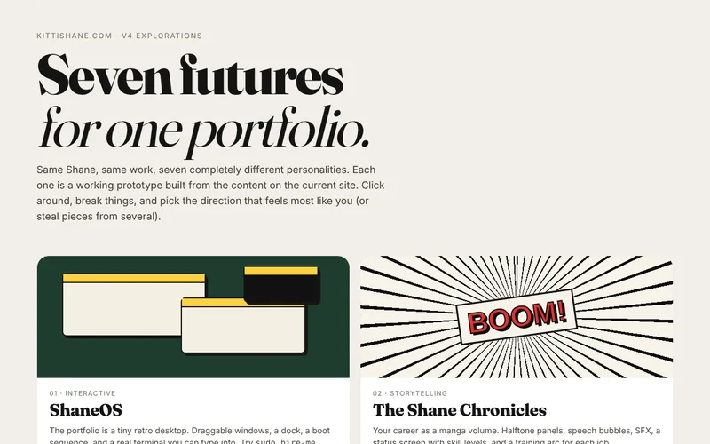
Working prototypes beat mockups. I could open each one on my phone, click around, and feel which one I'd actually send to a recruiter. They also exposed my stale content, because every concept used my real data.
Step 3: make it hireable
I picked Playground. Then most of what made it a toy had to go. The throwable physics name, the skill blocks, the shake and gravity buttons and the scrolling banner were fun for ten seconds, and they got in the way of the question a visitor came with: who is this, and can he do the job?
The hero got the most rewrites. I wrote three positioning variations and picked the one aimed at employers: frontend engineer first, full stack on my own apps. The tagline became "I build products people actually use.", followed by one paragraph with the facts: 6+ years of React, Next.js and TypeScript, a web app at EarnIn that reached 1M+ users, and apps I've built from the database to the App Store. My illustration sits in a blue dotted card. Hover it and the office shirt swaps to a tank top with a "WFH mode" label.
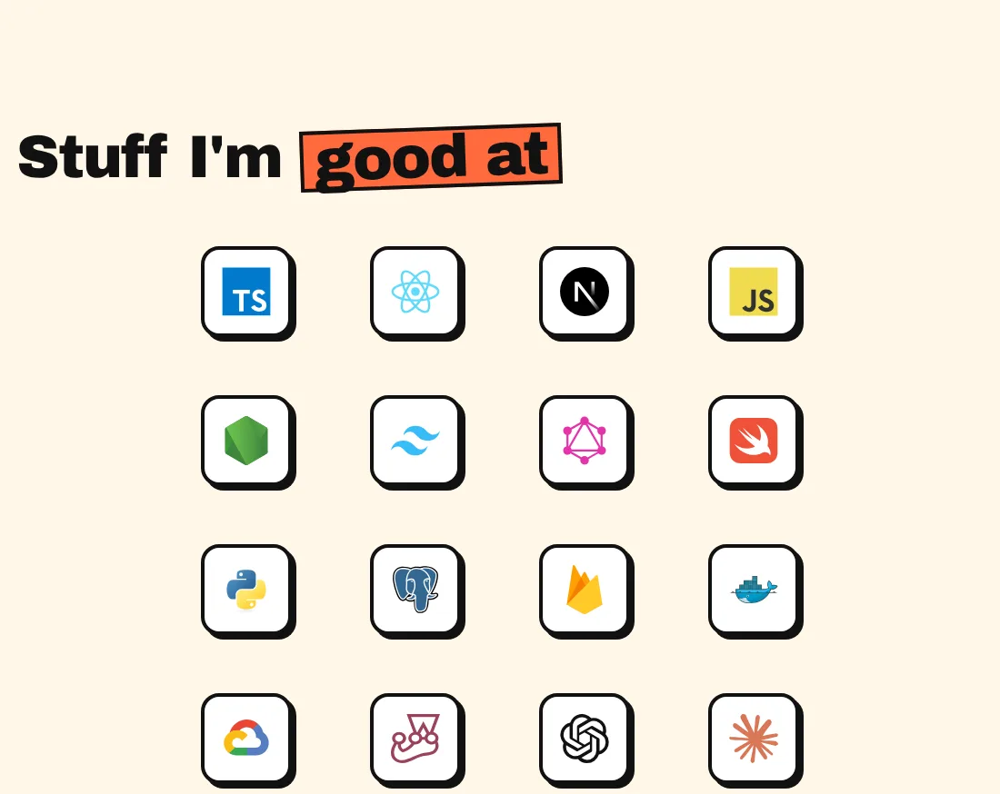
Things I made is grouped instead of flat. My iOS apps sit under an "Acorn Studio" label and link to the App Store. I didn't give Acorn its own card, because that would list the same apps twice. Open source comes next: a contribution to the Ardia browser and my React SmartBanner package.
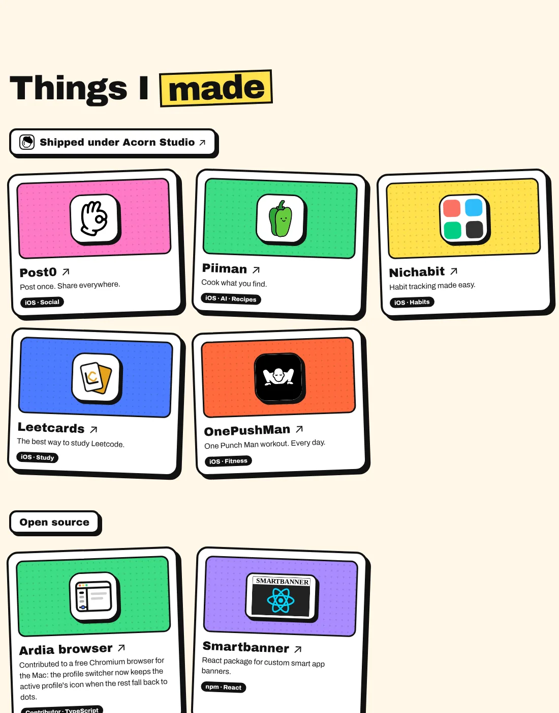
My journey is my favourite part. A road draws itself as you scroll, does one loop-the-loop, and my face rides along it from my 2017 internship to now. Each year label takes the colour of that company's logo: Toptal blue, EarnIn yellow, Zendai orange.
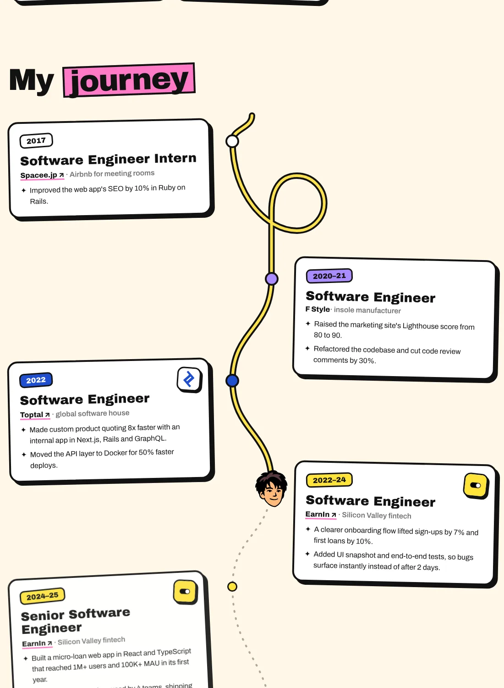
The blog posts now live on the site instead of dev.to, and the Toptal badge became a card you can click anywhere on.
Three languages
I'm Thai, I started my career at a company in Japan, and most tech work happens in English. So the site comes in English, Thai and Japanese, switched from the top corner with a flag and a short label written in the current language. My name changes too: กิตติโชติ กมลาภิรัตน์ in Thai and キッティチョート・カマラピラット in Japanese.
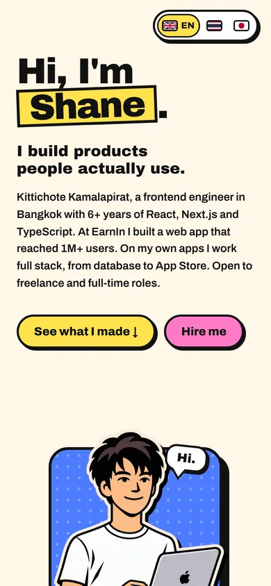
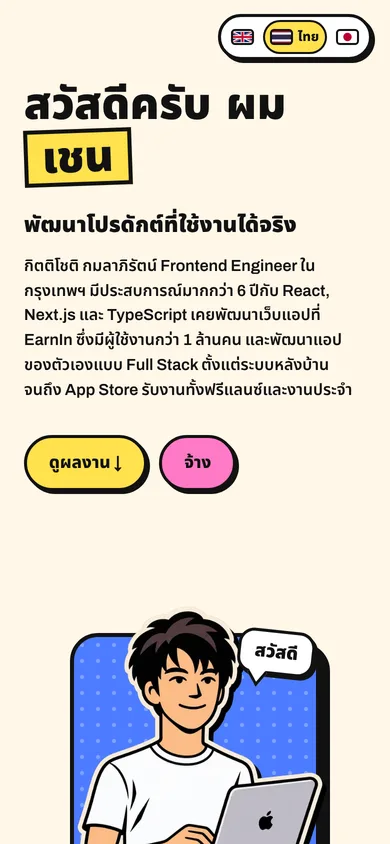
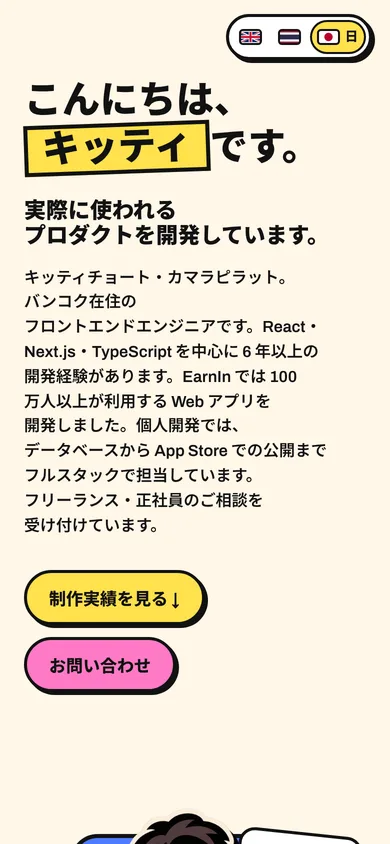
The first Thai and Japanese drafts were literal translations of my playful English, and they read badly. A joke that works in English sounds odd in Thai. The rule now: English stays as I wrote it, and Thai and Japanese use plain, professional website wording, not a line-by-line translation. Blog posts stay in English.
A contact form on a static site
GitHub Pages only serves files, so the form needed a small backend. It posts to one serverless function on Vercel, and the function sends me the message through Resend. Replying to that email goes straight to the visitor.
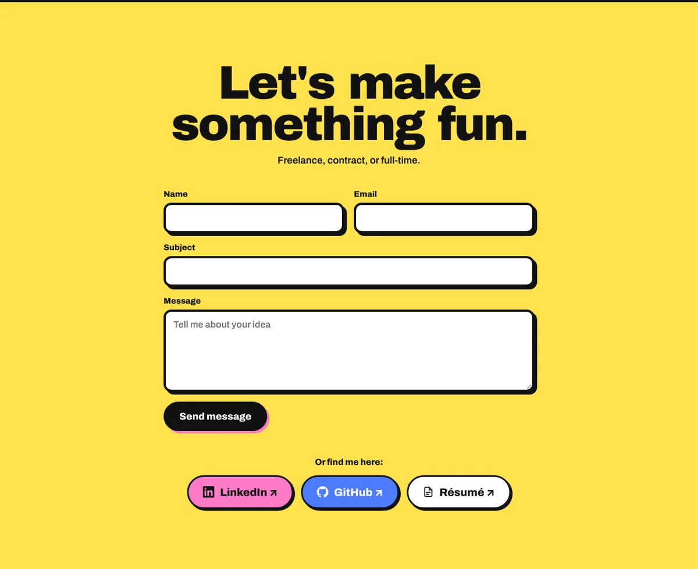
Only my own site may call the function. A hidden field catches bots, and every field has a length limit.
The visitor gets a short confirmation email in the language they used on the site.
The confirmation never repeats the message, so nobody can use my form to email other people.
Resend's free plan covers 3,000 emails a month, and each message uses two.
Shipping it
The new site replaced the Next.js version on the homepage. Since it's plain HTML, CSS and JavaScript, there's nothing to build: the GitHub Actions workflow now uploads one folder to GitHub Pages. The old Next.js code is still in the repo. After that came the small things you only notice once a site is live: a footer, a vector version of my face for the journey road, and a résumé icon whose lines disappeared on the dark footer.
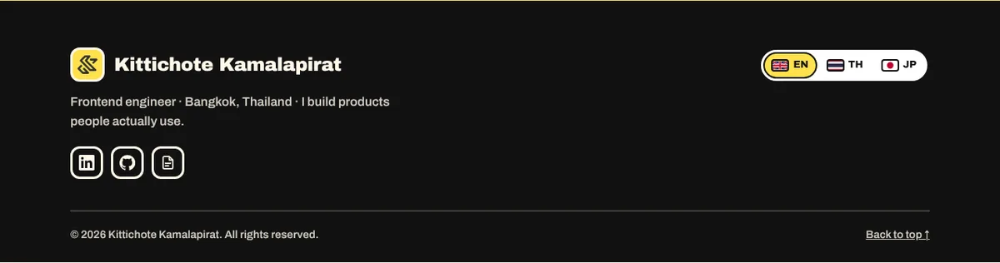
How I worked with AI
I ran the project in Claude: one chat where I dropped requests, and a separate thread for each piece of work, each with a visible checklist. A shared project memory kept the rules I'd set, like how the Thai copy should sound or which Toptal link must never change, so I didn't have to repeat them. Every change went to a preview link first and then to GitHub Pages through a pull request. Most of my feedback was a screenshot and one sentence.
Not everything went smoothly. I accidentally built the site in two separate projects, which is why this post stitches together two histories. One preview went up without my account key and needed claiming. And AI-written Thai still needs a human ear.
What I learned
- Go wide before going deep. With AI, working prototypes are cheap to make, and choosing between real things is much easier than imagining them.
- Fun is the hook, not the content. The playful parts that stayed are the ones that don't block the facts: a hover swap, a road you scroll, a face that rides it.
- Ship the trust signals first. The Toptal badge was live while the design was still undecided.
- Don't translate, localize. Each language gets copy that sounds normal in that language.
- A static site can still talk back. One small function and a free email plan were enough for a real contact form.
What's next
Form emails will come from my studio domain, theacorn.studio. The game, the manga and the other concepts stay online for anyone who likes them. And the site will keep changing, because a portfolio you never update is one you've given up on.